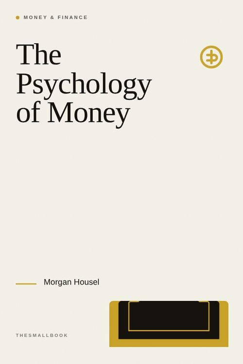

Why Did Wachovia Fail?
Too weak to stand, too big to drop
What happened
Wachovia was a proud American banking name built through mergers into a coast to coast giant. Its purchase of Golden West added a portfolio of option adjustable rate mortgages at the peak. Those mortgages and the wider panic crushed confidence in 2008. Regulators pushed a rescue, Citigroup circled, and Wells Fargo ultimately acquired Wachovia without government assistance in a weekend that showed how close it stood to failure.
The fatal mistake
Buying growth in the most dangerous loan book at the top of the cycle.
The lesson
An acquisition can import the exact weather that sinks the ship.
The antidote book

Doing well with money is a soft skill: how you behave beats what you know. Every time.
READ THE SUMMARY OPEN INTERACTIVE BOOKQuestions people ask about Wachovia
Why did Wachovia fail? Buying growth in the most dangerous loan book at the top of the cycle.
How much was lost? Forced into Wells Fargo sale
What is the lesson? An acquisition can import the exact weather that sinks the ship.
Wachovia kyun fail hua? In simple English: Buying growth in the most dangerous loan book at the top of the cycle. The cost was Forced into Wells Fargo sale.
Keep digging
More money and market failures · Open the full Graveyard
Read the antidote book summary: The Psychology of Money
Related failures
- Why did Republic First Bank fail? 2024 · The smaller echo of 2023
- Why did PaisaBazaar fail? 2024 · India's Biggest Loan Marketplace, Written Down 95%
- Why did Silicon Valley Bank fail? 2023 · The First Bank Run at Twitter Speed
- Why did Signature Bank fail? 2023 · The Crypto Pivot That Sparked a 48-Hour Bank Run
- Why did First Republic Bank fail? 2023 · The Bank That Catered to the Rich - and Died of a Run
- Why did Credit Suisse fail? 2023 · 167 Years of Prestige, Death by a Thousand Scandals
Questions this case answers
Questions people ask about Wachovia
Why did Wachovia fail? Buying growth in the most dangerous loan book at the top of the cycle.
How much was lost? Forced into Wells Fargo sale
What is the lesson? An acquisition can import the exact weather that sinks the ship.
Wachovia kyun fail hua? In simple English: Buying growth in the most dangerous loan book at the top of the cycle. The cost was Forced into Wells Fargo sale.
Keep digging
More money and market failures · Open the full Graveyard
Read the antidote book summary: The Psychology of Money
Related failures
- Why did Republic First Bank fail? 2024 · The smaller echo of 2023
- Why did PaisaBazaar fail? 2024 · India's Biggest Loan Marketplace, Written Down 95%
- Why did Silicon Valley Bank fail? 2023 · The First Bank Run at Twitter Speed
- Why did Signature Bank fail? 2023 · The Crypto Pivot That Sparked a 48-Hour Bank Run
- Why did First Republic Bank fail? 2023 · The Bank That Catered to the Rich - and Died of a Run
- Why did Credit Suisse fail? 2023 · 167 Years of Prestige, Death by a Thousand Scandals
Questions this case answers
They paid full price. You get the lesson in simple English.